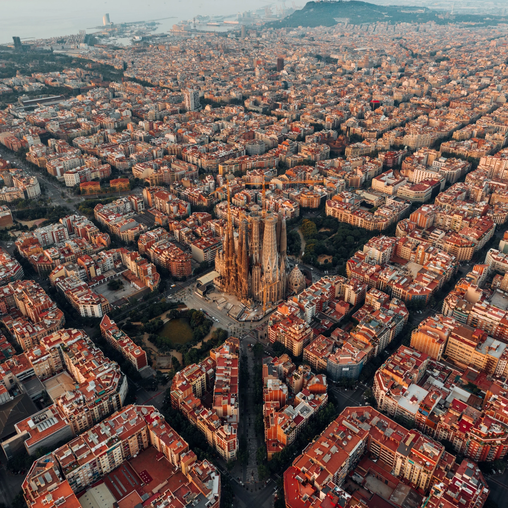
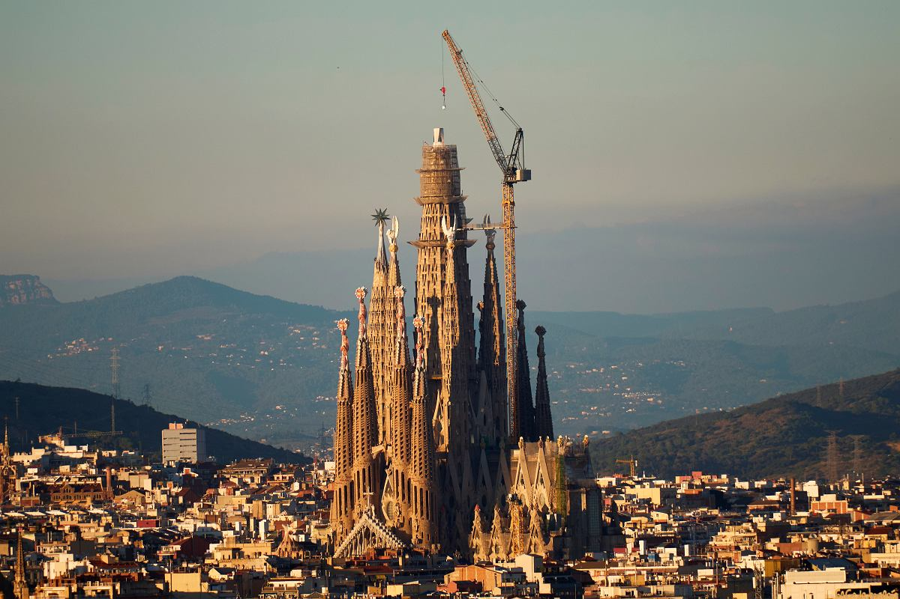
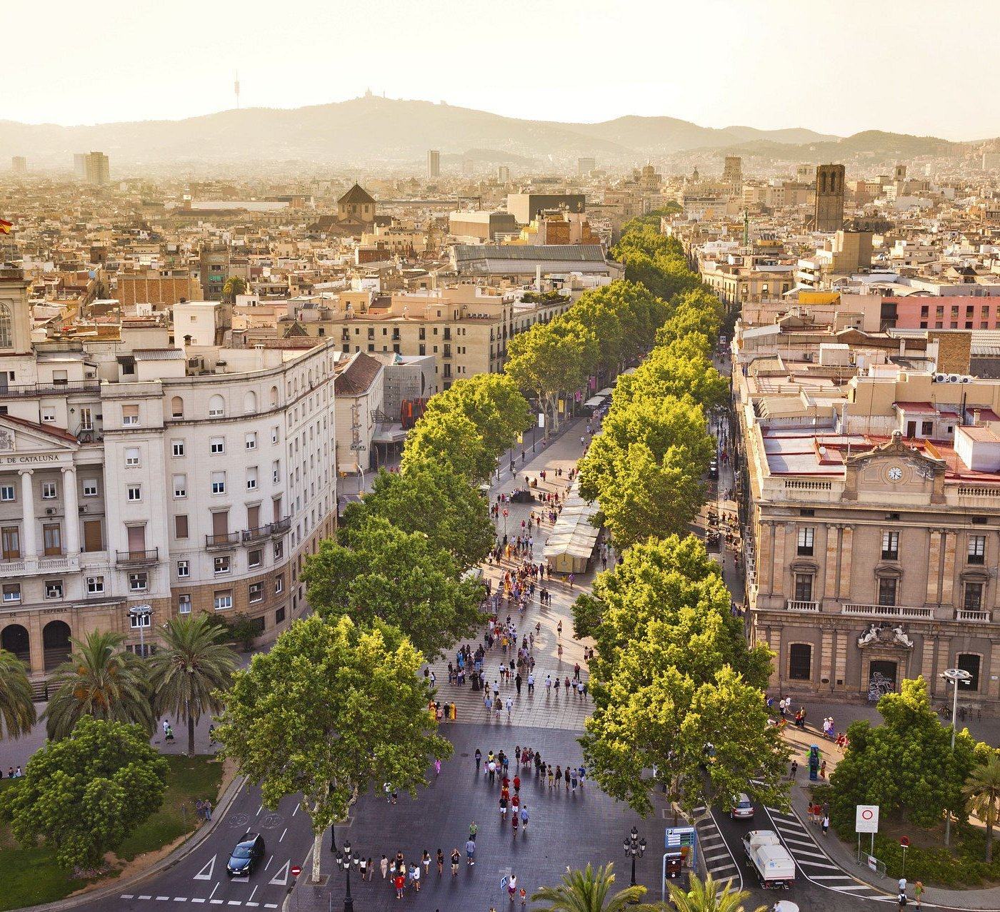

Barcelona
Barcelona ::: Amsterdam ::: Rzym

Barcelona, stolica Katalonii i drugie co do wielkości miasto Hiszpanii, to tętniąca życiem metropolia nad Morzem Śródziemnym, słynąca z unikalnej architektury Gaudiego (Sagrada Familia, Park Güell), gotyckiej dzielnicy Barrio Gótico, piaszczystych plaż (Barceloneta) i znakomitej kuchni. Oferuje idealne połączenie kultury, historii, sztuki, życia nocnego oraz sportu, będąc jednym z najpopularniejszych celów turystycznych w Europie.
Zabytki
Sagrada Familia

Sagrada Família – secesyjny kościół w Barcelonie w dzielnicy Eixample w Katalonii o statusie bazyliki mniejszej, uważany za najważniejsze osiągnięcie projektanta Antoniego Gaudíego. Absolutny punkt obowiązkowy. W lutym 2026 roku ukończono prace nad najwyższą Wieżą Jezusa Chrystusa. Zaleca się rezerwację biletów online z dużym wyprzedzeniem..
Park Güell

Park Güell (hiszp. Parque Güell, katal. Parc Güell) – duży ogród z elementami architektonicznymi w Barcelonie przy ulicy Olot, bocznej alei Santuari de la Muntanya, w północno-centralnej części miasta. Zaprojektowany przez katalońskiego architekta Antoniego Gaudíego na życzenie jego przyjaciela Eusebiego Güella, przemysłowca barcelońskiego, który – zauroczony angielskimi „miastami-ogrodami” – przedsięwzięcie sfinansował. Projekt w założeniu miał być osiedlem dla bogatej burżuazji, obejmującym 60 działek na powierzchni ok. 20 ha w pobliżu tzw. Łysej Góry. Prace trwały w latach 1900-1914. Projektu tego Gaudí nigdy nie ukończył. Powstało jedynie pięć budynków: dwa pawilony po dwóch stronach głównego wejścia oraz trzy inne w samym parku. W jednym z nich od roku 1906 mieszkał sam Gaudí. W 1922 roku władze Barcelony wykupiły teren i przekształciły go w park miejski.
La Rambla

Ulica znajduje się w dzielnicy Barri Gòtic. Prowadzi od Plaça de Catalunya w centrum do pomnika Krzysztofa Kolumba na nabrzeżu. Oficjalnie La Rambla stanowi ciąg krótszych ulic, z których każda nosi inną nazwę (stąd forma w liczbie mnogiej, Les Rambles). Poczynając od Plaça de Catalunya kolejno są to: Rambla de Canaletes, Rambla dels Estudis (nazwa pochodzi od znajdującego się tu niegdyś uniwersytetu), Rambla de Sant Josep (nazywana również Rambla de Flores, gdyż handluje się tam kwiatami), Rambla dels Caputxins oraz Rambla de Santa Monica. Zbudowanie na początku lat 90. centrum handlowego Maremagnum spowodowało przedłużenie deptaka w postaci drewnianego molo prowadzącego do portu (Rambla de Mar).
Wzgórze Montjuïc

Na szczycie Montjuïc (173 m n.p.m.) znajdowały się różnego rodzaju fortyfikacji, z których najnowsza (zamek Castell de Montjuïc) istnieje do dziś[2]. Forteca została zbudowana w XVII wieku (część dobudowano w XVIII wieku). W 1842 tutejszy garnizon, lojalny władzy w Madrycie, ostrzeliwał niektóre części miasta. Forteca była wykorzystywana jako więzienie. Aż do czasów generała Franco często przetrzymywano tu więźniów politycznych[3]. Dokonano tu licznych egzekucji. W 1897 na wzgórzu odbyło się wydarzenie znane jako Els processos de Montjuïc, które przyspieszyło egzekucję zwolenników anarchii. Efektem były surowe represje względem robotników walczących o prawa[5]. W czasie hiszpańskiej wojny domowej przeprowadzano tu egzekucje zarówno republikanów, jak i narodowców. W 1940 został tu stracony kataloński polityk – Lluís Companys i Jover.